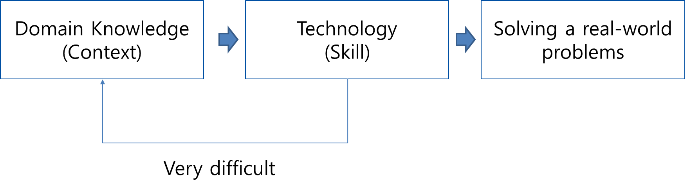
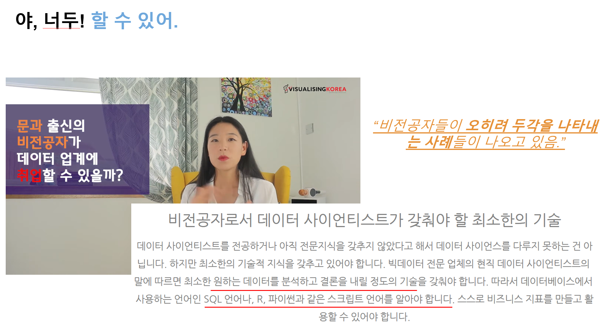
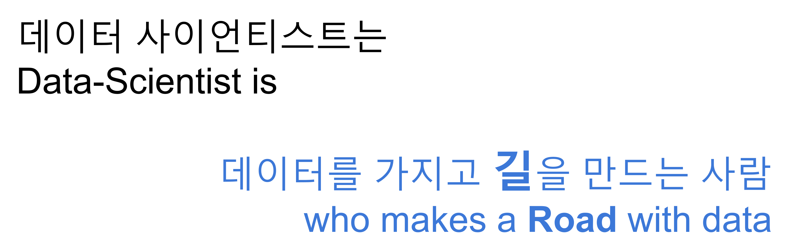
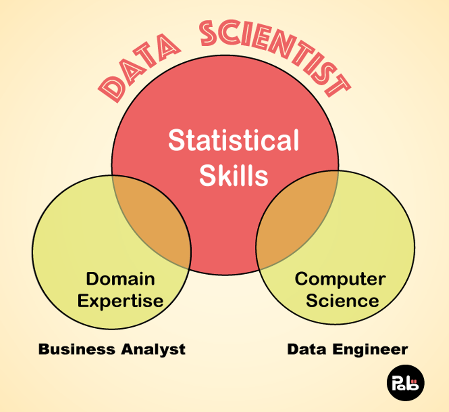
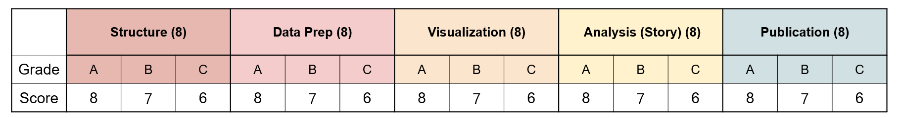
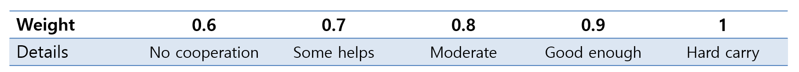

Course Intro
Content
About Lecturer
Data science & R
Course management
Score
Communication
Course description
About Lecturer
Changjun LEE
- Home: https://changjunlee.com/
Associate Professor (Head of Culture & Tech)
School of Convergence. SKKU.
As a computational social scientist, I bring a unique interdisciplinary perspective to the fields of economics, innovation studies, and convergence technologies. With a background in natural sciences, including a bachelor’s degree in biology and chemistry, I went on to earn a Ph.D. in technology management, economics, and policy. My research focuses on utilizing computational methods to tackle a wide range of social phenomena, including technology evolution & regional growth, knowledge management, and technology & convergence innovation. I am passionate about using technology and data to drive innovation and solve real-world problems.
Research interest: Media & Innovation, Immersive media and users’ behavior, Technology management, Data Science
Teaching: Culture & Technology | Data Science in CNT
Things I love
Research
Chat & Coffee & MBTI
Travel
Play (Things)
Weekly Design
Data Science & R
Data Science is a modern academic area helping people to draw useful information and intuition so that making them to make reasonable decisions
Why Data Science is So Important to Learn?
In the age of information, data science has emerged as a pivotal skill set across industries, transforming the way decisions are made and offering insights that were previously inaccessible. Its importance stems from the ability to analyze and derive meaningful insights from data, which can drive strategic business decisions, lead to technological innovations, and solve complex problems. Here’s why learning data science is crucial, even for those not pursuing a career in computer science.
Data-Driven Decision Making
One of the foremost reasons for learning data science is its role in data-driven decision making. With an increasing amount of data generated every day, the ability to sift through, analyze, and interpret this data can be the difference between staying ahead or falling behind in any industry. Data science skills enable individuals and organizations to make informed decisions based on empirical evidence rather than intuition or speculation.
Cross-Disciplinary Application
Data science is not confined to the tech industry. It finds applications in healthcare, finance, retail, education, and more. For instance, in healthcare, data science can predict disease outbreaks, in finance, it can assess risk and in retail, it can help understand consumer behavior. This cross-disciplinary nature of data science means that learning it can open up opportunities in virtually any field, making it a valuable skill set for all majors.
Enhancing Problem-Solving Skills
Learning data science enhances critical thinking and problem-solving skills. It involves identifying patterns, making predictions, and solving complex problems using a data-driven approach. These skills are transferable and valuable in any career path, making data science learning beneficial beyond the technical aspects.
Future Job Market
The demand for data science skills is growing rapidly. According to the U.S. Bureau of Labor Statistics, the job market for data science and analytical roles is projected to grow much faster than the average for all occupations. Learning data science can thus provide a competitive edge in the job market, even for those in non-computer science fields.
Empowering Innovation
Data science is at the heart of innovation today. From developing new products and services to improving existing processes, the insights derived from data science can lead to significant advancements and efficiencies. By understanding data science, individuals in non-computer science fields can contribute to innovation within their industries.
For non-computer science majors: You are the one who has to learn this.
The importance of data science transcends traditional boundaries of computer science and technology. It is a critical skill for the future, enabling individuals to navigate and excel in a data-driven world. For non-computer science majors, learning data science not only enhances employability and problem-solving skills but also opens up new avenues for innovation and impact in their respective fields. In essence, data science is a universal language of the future, and learning it is key to unlocking potential across the spectrum of professional endeavors.
Why is it better for a non-major (#muggle) to become a data scientist (#wizard)?
- Non-CS major being a data-scientist has an advantage


- Data Never Sleeps

https://www.domo.com/data-never-sleeps
So Data Scientist is..

Requirements

Domain Expertise is getting more important as the world is getting more complicated
This course will cover coding part and a little bit of statistical skills
Don’t worry! Practice makes perfect.
Why R is the Best Language for Non-Computer Majors to Learn Data Science
In the realm of data science, the choice of programming language is pivotal. For non-computer majors venturing into this field, R stands out as a particularly accessible and powerful tool. Here’s why R is often considered the best language for those new to data science.
1. Designed for Statistics and Data Analysis
R was specifically created for statistical analysis and data visualization. Unlike general-purpose programming languages that can be used for data science, R’s syntax and functions are tailored to statistical analysis, making it more intuitive for analyzing data. For students and professionals without a computer science background, this focus makes R an excellent entry point into data science.
2. Comprehensive Libraries and Packages
R boasts a vast ecosystem of packages designed for data science tasks, including dplyr for data manipulation, ggplot2 for data visualization, and caret for machine learning. These packages simplify complex tasks into more manageable functions, allowing users to perform sophisticated data analysis with relatively simple commands. This extensive library support means that non-computer majors can accomplish more with less coding expertise.
3. Strong Community and Support
The R community is known for its inclusivity and support, especially for beginners. Numerous online forums, such as R-bloggers and Stack Overflow, provide a platform for learners to seek help, exchange ideas, and stay updated on the latest developments in R. This community support is invaluable for non-computer majors who may require guidance as they navigate their data science journey.
4. Free and Open Source
R is a free, open-source software, making it accessible to everyone without the need for expensive licenses or subscriptions. This democratizes the learning process, allowing individuals from diverse backgrounds to explore data science without financial barriers. Moreover, being open-source encourages users to contribute to the development of R, further enriching its capabilities and resources.
5. Versatile Data Visualization Capabilities
Visual data representation is crucial in data science for understanding complex datasets and communicating findings effectively. R’s superior data visualization capabilities, particularly through the ggplot2 package, allow users to create high-quality, publication-ready graphs and plots. This is particularly beneficial for non-computer majors, who might rely more heavily on visual representations to understand and present data insights.
6. Industry Adoption and Academic Support
R is widely adopted in both academia and industry for research and data analysis. This widespread use means that learning R can open up opportunities in various fields, including biostatistics, epidemiology, economics, and social sciences. For non-computer majors, the ability to apply their data science skills directly to their field of study or industry is a significant advantage.
For non-computer majors looking to delve into data science, R offers a unique blend of accessibility, specialized functionality, and community support. Its design for statistical analysis, along with a rich ecosystem of packages and resources, makes R an ideal starting point for those new to programming and data analysis. By learning R, non-computer majors can not only gain valuable data science skills but also apply these skills directly to their fields of interest, enhancing their research capabilities and career prospects.
How About Python?
A good quesiton! R and Python are both powerful and popular programming languages in the data science community, each with its unique strengths. When comparing R to Python, especially from the perspective of those with non-computer science backgrounds or specific analytical needs, several aspects of R stand out, highlighting its strengths:
1. Specialization in Statistical Analysis
R’s Foundation: R is specifically designed for statistical analysis and graphical models. It was developed by statisticians for statisticians. This specialization gives it an edge in handling complex statistical data analyses out of the box, without the need for extensive programming knowledge or additional libraries.
Comprehensive Statistical Packages: R has a comprehensive collection of packages for various statistical analyses, including linear and nonlinear modeling, classical statistical tests, time-series analysis, classification, clustering, and more. These packages are often written by statisticians and subject matter experts, ensuring they are tailored for rigorous statistical analysis.
2. Superior Data Visualization
ggplot2 and Beyond: R’s ggplot2 package is renowned for its capability to create advanced and beautiful data visualizations with ease. The grammar of graphics implemented by ggplot2 allows for the layering of data, aesthetic mappings, and statistical transformations, facilitating the creation of complex plots intuitively.
Rich Ecosystem for Visualization: Beyond ggplot2, R offers a rich ecosystem of visualization packages like lattice, plotly (for interactive plots), and shiny (for interactive web apps), providing a wide range of options for presenting data insights effectively.
3. Integrated Development Environment (IDE) Support
- RStudio: RStudio is a powerful and popular IDE specifically designed for R. It provides an integrated environment that makes data analysis, visualization, and programming more accessible. RStudio enhances the R programming experience with features like code completion, easy package management, and markdown support for reproducible research.
4. Community and Support
Dedicated Community: R has a vibrant and welcoming community, particularly attractive to those in academia, research, and various scientific disciplines. The community offers extensive resources, forums, and groups for support, making it easier for newcomers to get started and for experts to dive deep into specific statistical challenges.
CRAN Repository: The Comprehensive R Archive Network (CRAN) is a repository of over 16,000 R packages (as of my last update in April 2023). This vast and well-organized repository ensures that R users have access to tools and libraries for nearly every statistical and graphical method imaginable.
5. Data Handling and Analysis
Data Wrangling: While Python’s pandas library is powerful for data manipulation, R’s dplyr and data.table packages offer syntax that is arguably more intuitive for data transformation and aggregation, especially for those with a background in SQL or those new to programming.
Analysis Workflow: R is designed with an analysis-first approach, emphasizing data exploration and analysis workflows. This makes R particularly suited for iterative data exploration, hypothesis testing, and modeling in a way that is highly accessible to researchers and analysts.
R is intuitive for analysis: R may not work with a wide variety of projects, but it is the best choice for analysis and inference work. If you plan to work in a specialized field, you’ll want a specialized programming language. R also offers a powerful environment ideally suited to the types of data visualizations data scientists employ.
Comparative Consideration
While Python is a general-purpose programming language with broad applications ranging from web development to software engineering and has significant strengths in machine learning and deep learning with libraries like TensorFlow and PyTorch, R’s focused design for statistical analysis and data visualization makes it exceptionally well-suited for data scientists, statisticians, and researchers. This focus, combined with its comprehensive statistical packages, superior data visualization capabilities, and supportive community, positions R as a strong choice for those particularly interested in the statistical and analytical aspects of data science.
Source: https://www.edx.org/resources/r-vs-python-for-data-science-explainer-learning-tips
Install gadgets
Install R, R Studio, & Rtools
R
R Studio
Rtools (only for window user)
To install R packages containing C/C++ language for window users (no need for Linux and Mac users)
Things you need to know
Don’t Use OneDrive.
Use Github instead
Many people get an error when installing because of OneDrive
Set Windows user name to English
- If Korean characters are mixed in the installation path, there is a high probability of error occurrence
Installation Order
Step 1 ‑ Download the file
- Download R, Rtools, Rstudio installation files
Step 2 - Install R
Unified installation path: All will be installed in the
C:/RfolderRun in administrator mode when running the R installation file
After installing R, grant write permission to the R folder, Right-click and turn off read only
Step 3 ‑ Install Rtools
Administrator mode execution installation and folder setting as C:\R\rtools40
Create environment variable RTOOLS40_HOME after installation: Value - C:\R\rtools40\
Add %RTOOLS40_HOME%\usr\bin\ to the Path variable.
Step 4 - Install Rstudio
Right-click and run as administrator - installation path C:\R\Rstudio
Check rtools connection with Sys.which(“make”) command after installation
Course management
Time: Wed 10:00 ~ 12:00
Location: International Hall High-Tech e+ Lecture Room (9B312)
Class consists of Pre-class, Class, and PBL project
Pre-class
Students will be required to watch the lecturer’s recorded lecture (or other given videos) before the off-line (or online streaming ZOOM) class and learn themselves
Video is about the concept of the data science and the programming language
Students are required to submit Discussions to check the level of their understanding
Class
Lecturer summarize the pre-class lecture and explain more details
Students will practice with the advanced code
A Quiz will be in the class to check the level of understanding
PBL project
Teams will be arranged randomly
Data will be given. Teams are going to choose the data they want to explore considering their interest
Teams can offer a zoom meeting with lecturer if they need
Final outputs (An example not limited)
Data Preparing (or Collecting)
Explore data (Descriptive stats)
Set your hypothesis (or research questions)
Visualize data to confirm your hypo or RQs
Explain your findings
Expanding your findings to implications
Textbooks for the course
- R4DS: R for Data Science (written by Hadley Wickham and Garrett Grolemund)
- is an excellent resource for learning data science using R, covering data manipulation, visualization, and modeling with R. The book is available as a free online resource.
- RC2E: R Cookbook (written by JD Long and Paul Teetor)
- is a comprehensive resource for data scientists, statisticians, and programmers who want to explore the capabilities of R programming for data analysis and visualization.
- RGC: R Graphic Cookbook (written by Winston Chang)
- is a practical guide that provides more than 150 recipes to help you generate high-quality graphs quickly, without having to comb through all the details of R’s graphing systems
- MDR: Statistical Inference via Data Science (Modern Dive) (written by Chester Ismay and Albert Y. Kim)
- is a comprehensive textbook that provides an accessible and hands-on approach to learning the fundamental concepts of statistical inference and data analysis using the R programming language.
- ISR: Introductory Statistics with R (written by Peter Dalgaard)
- is a great resource for learning basic statistics with a focus on R programming. This book covers a wide range of statistical concepts, from descriptive statistic
Score
Attendance & Participation (10 %)
Preclass Discussion Submission (10 %)
QZ (40 %)
Project (40 %)
Rubric Grade Table for the Final Output (40)

Peer Review Weight (0.6 ~ 1)

Individual Score(40) = Team Score(40) * Peer Review Weight(0.6-1)
Communication
Notices & Questions
Please join Kakao open-chat room
When you enter, please make sure to enter your name as it is on the attendance sheet. (입장하셔서 이름을 꼭 출석부에 있는 이름으로 설정해주세요.)
Personal counsel (Scholarship, recommendation letter, etc.)
CJ-counselling room (Anything but the class content)
Notice
Watch and learn yourself with the pre-class content (Week 2)
Ensure that your laptop has R and RStudio installed and ready to use.